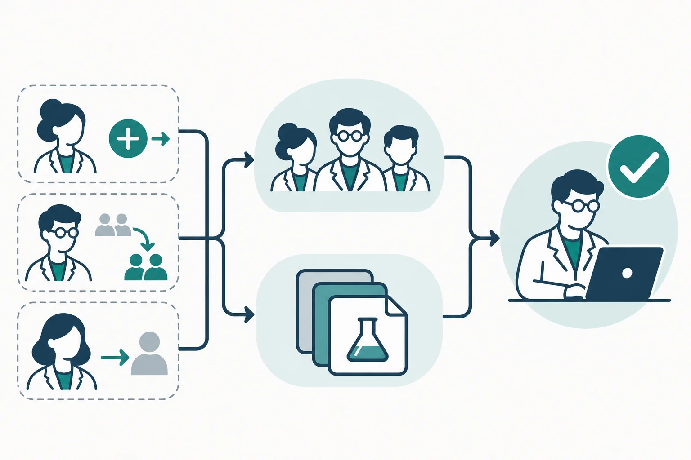

Article · 飞函
Article · 飞函
课题组成员轮换，项目群和共享资料权限怎么管
一名研究生完成阶段任务离组，新同学接手实验记录。负责人把新同学拉进项目群，却忘了调整共享资料的访问范围；几周后才发现，离组成员仍在资料的授权名单里。人员轮换本是课题组的常态，问题出在项目群和资料权限由不同动作维护，交接时容易只完成一半。
先把访问范围按项目说清楚
课题组可以先列出每个项目的负责人、在组成员和需要短期参与的协作者，再对应梳理项目群、共享空间和具体资料的访问名单。对于跨项目共用的模板与制度文件，可单独确定共享范围；实验原始记录、未公开成果等资料，则按实际参与任务确定访问人员。这样，新成员入组时知道该加入哪里，成员离组时也知道要从哪里移除。
权限设置应尽量对应岗位和任务，而不是沿用“曾经参与过项目”的名单。资料即使放在同一个共享空间，也要检查其中是否有需要更窄访问范围的内容。
把人员变动做成一张交接清单
每次入组、转组或离组，都由项目负责人确认变动，再由指定人员处理项目群和共享资料。入组时，核对成员需要进入的群及可访问的资料；转组时，先明确旧项目是否还需要其协作；离组时，逐项检查群成员名单、共享空间授权和单独分享过的资料。

这两条访问路径要分别核对：**退出项目群，不等于共享资料的授权也已收回。**已经下载到个人设备的副本，也不能仅靠调整在线权限处理；交接时应同时确认资料归档、设备和副本的处置责任。
用工具承接动作，责任仍要明确
飞函提供即时通讯、组织架构、网盘共享空间，以及按成员或部门分配共享权限等能力。课题组可以用项目群承接交接通知，用共享空间集中放置项目资料，并依据实际成员范围检查授权。对于参与范围经常变化的项目，负责人还应定期核对群名单与资料授权名单，发现不一致就及时调整。
一套可执行的做法是：人员变动时立即处理，阶段节点再集中复核；每次记录由谁提出变更、谁确认访问范围、谁完成调整。这样，协作不会因为交接而中断，项目资料的访问边界也能跟着人员变化持续维护。